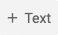

2.2. Text Cells#
Text Cells are cells that contain Markdown. Markdown is a markup language that is used to format text. In this section, we are going to look at different formatting options to make our text more structured and user-friendly.
To add a Text cell:
Choose the
+Textbutton in the top toolbar This will add the text cell in your Jupyter Notebook. Double-click on the cell and start typing your Markdown. There is a display panel on the right-hand-side that shows the output of your Markdown which is very helpful.
To stop editing the Text cell, click on the
Close markdown editorbutton that is present on the top tight-hand-side of the cell menu.
Let’s start looking at how to use Markdown below.
2.2.1. Headings#
Below is the Markdown code you need to use to specify headings at different levels and the rendered output respectively below the code:
# Heading 1
Heading 1
## Heading 2
Heading 2
### Heading 3
Heading 3
#### Heading 4
Heading 4
2.2.2. Inline text formatting#
To make text bold use **double asterisks** or __double underscores__.
To make text italic use *asterisks* or _underscores_.
To make text ^superscript^ use ^caret^.
To make text ~subscript~ use ~tilde~.
To mark text as inline code use `backticks`.
To ~~strikethrough~~ text use ~~double tilde~~.
2.2.3. Line breaks#
To create a line break, put more than 2 spaces at the end of a sentence.
Exercise 2.1 (Markdown in Jupyter Notebook)
Level:
Replicate the output of the text below in a new Jupyter Notebook notebook2.
 The text comes from a paper by Monya Baker
that was published in 2016 in the Nature journal that triggered the discussion about Reproducibility Crisis.
The text comes from a paper by Monya Baker
that was published in 2016 in the Nature journal that triggered the discussion about Reproducibility Crisis.
Solution to ( 2.1
# 1,500 scientists lift the lid on reproducibility
## Survey sheds light on the 'crisis' rocking research.
### by Mona Baker
**More than 70% of researchers have tried and failed to reproduce another scientist's experiments**, and more than half
have failed to reproduce their own experiments. Those are some of the telling figures that emerged from *Nature*'s survey
of 1,576 researchers who took a brief online questionnaire on reproducibility in research.
The data reveal sometimes-contradictory attitudes towards reproducibility. Although 52% of those surveyed agree that
there is a significant crisis of reproducibility, less than 31% think that failure to reproduce published results means
that the result is probably wrong, and most say that they still trust the published literature.
2.2.4. Links#
Linking text to Headers#
To link text to a header, use [link to header](#section-title). Inside the parenthesis, write the title text in lower-case
letters and replace spaces with a hyphen, for example, [link to header](#text-cells) will be rendered as link to header.
Linking text to a webpage#
To create a link to a webpage use [text of link](https://jupyter.org/). This is rendered as text of link.
2.2.5. Footnotes#
To indicate a footnote use[^2]. Indicate additional footnotes using other numbers as follows [^3], then specify the wordings of the footnotes as:
[^2]: This is the first footnote.
[^3]: This is the second footnote.
You do not need to put footnotes at the end of the document for them to be rendered there. This example is rendered as follows:
To indicate a footnote use[2]. Indicate additional footnotes using other numbers as follows[3], then specify the wordings of the footnotes as:
2.2.6. Lists#
Ordered lists#
To create an ordered list use the following syntax:
1. Item 1
2. Item 2
3. Item 3
This is rendered as:
Item 1
Item 2
Item 3
Use 4 spaces to indent an item if you would like to have sub-lists:
1. Item 1
2. Item 2
3. Item 3
a. Item 3a
b. Item 3b
c. Item 3c
4. Item 4
Item 1
Item 2
Item 3
a. Item 3a
b. Item 3b
c. Item 3cItem 4
Unordered lists#
In an unordered bulletted list, each item begins with *, + or -. Example:
* Item 1
* Item 2
* Item 3
* Item 3a
* Item 3ai
* Item 3aii
* Item 3b
* Item 3c
* Item 4
Will be rendered as:
Item 1
Item 2
Item 3
Item 3a
Item 3ai
Item 3aii
Item 3b
Item 3c
Item 4
2.2.7. Inserting images#
To insert an image use the following syntax: . Example:

Will be rendered as:

Exercise 2.2 (More Markdown)
Level:
Continue working on notebook2.ipynb from Exercise 2.1. Extend the output of notebook2.ipynb to look like
this.
You can find the image used in this exercise at this location: https://www.nature.com/news/polopoly_fs/7.36716.1469695923!/image/reproducibility-graphic-online1.jpeg_gen/derivatives/landscape_630/reproducibility-graphic-online1.jpeg
{kind=link}
More information about Markdown is provided here. Let us now look at code cells.